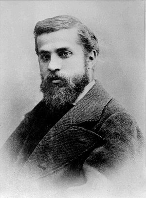
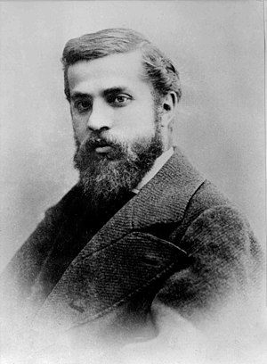
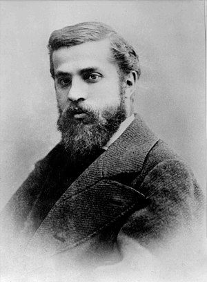
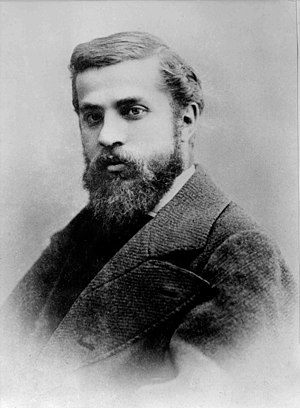

Autor: Antoni Gaudí
Data: 1904-1906
Técnica: Arquitetura Modernista
Dimensões: Aproximadamente 5.000 metros quadrados
Localização: Passeig de Gràcia, 43, Barcelona,
Espanha
A Casa Batlló, projetada por Antoni Gaudí, é um exemplo espetacular do modernismo catalão e uma das obras mais reconhecíveis de Gaudí. A fachada do edifício é marcada por suas formas onduladas e detalhes elaborados, que parecem inspirados em elementos naturais e fantasiosos. As cores vibrantes e as cerâmicas coloridas adicionam um brilho vibrante à estrutura, enquanto as formas que lembram máscaras e ossos reforçam a sensação de fantasia e mistério. A fachada é composta por uma combinação de azulejos de cerâmica, vidro e pedra, com detalhes que imitam a forma de uma espinha de dragão ao longo do telhado. A Casa Batlló é uma celebração da imaginação e da inovação arquitetônica. Gaudí combina elementos naturais e fantásticos para criar um edifício que é tanto funcional quanto uma obra de arte. A arquitetura é projetada para evocar um senso de maravilha e encantamento, refletindo a visão de Gaudí de uma integração harmoniosa entre a natureza e a construção humana. A casa não é apenas um espaço habitável, mas uma expressão do estilo artístico de Gaudí, que busca transcender as convenções e criar uma experiência única e mágica para seus ocupantes e visitantes.